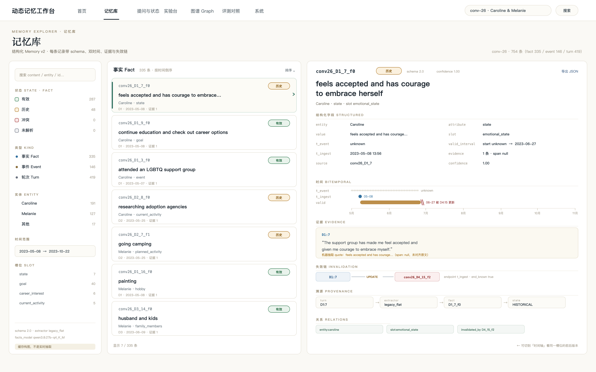
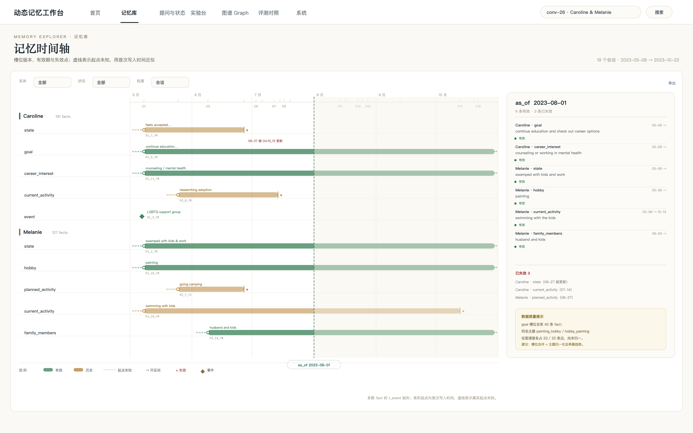
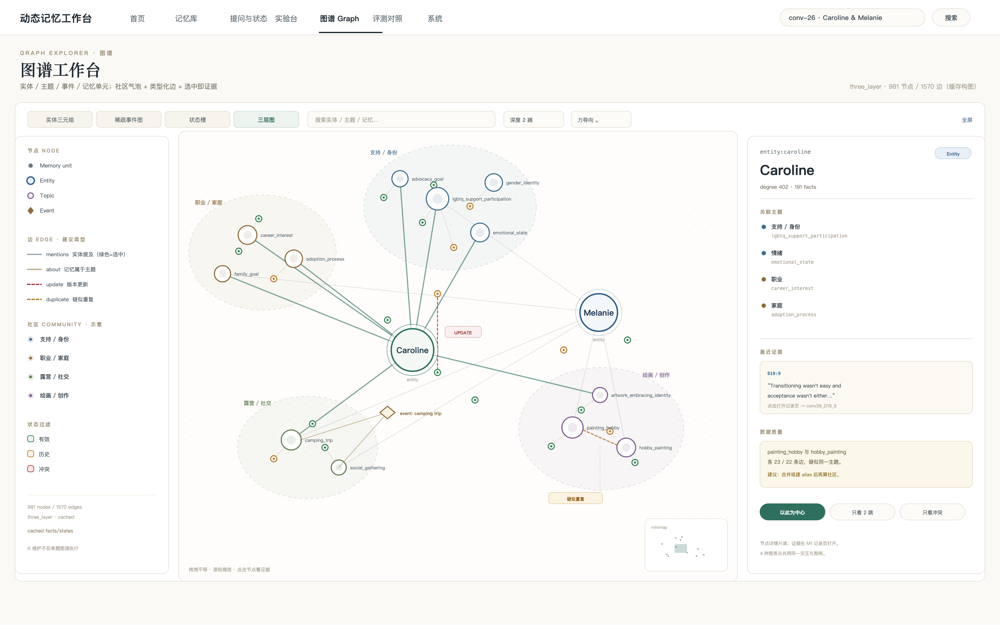

一条记忆 = 一张可追溯的记录：schema 字段、双时间条、证据原文、失效链、溯源四步。列表选中即详情。

按实体 × 槽位铺开版本条：有效、失效、开区间、事件点；一根 as-of 游标回看“那一刻系统记得什么”。

实体 / 主题 / 事件 / 记忆单元四类节点，社区气泡分组，边按语义着色；点节点右侧直接看证据。
先做 01 记录工作台（收益最大、数据已具备）；再把 02 时间轴 作为它的第二个 tab（共用选中态）；03 图谱 放在“按实体/主题探索”入口，默认只展开 1–2 跳，别一上来铺全图。矩阵与溯源链等有评测数据后再补。